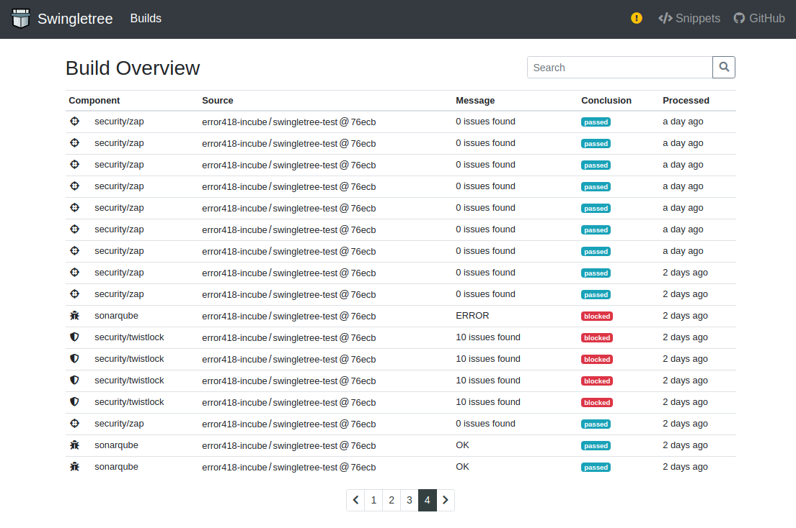
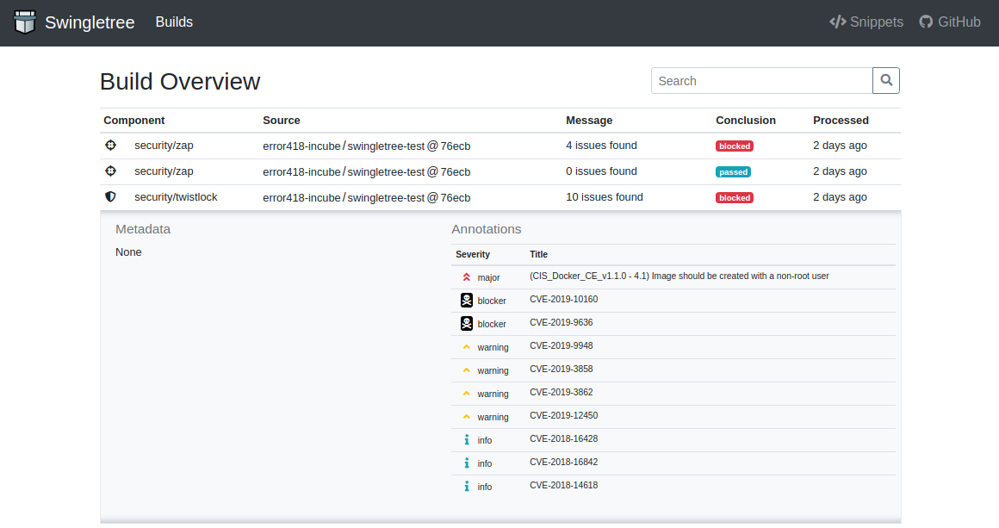
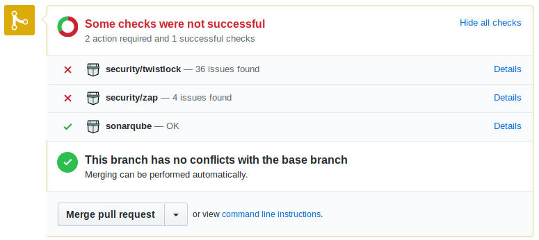
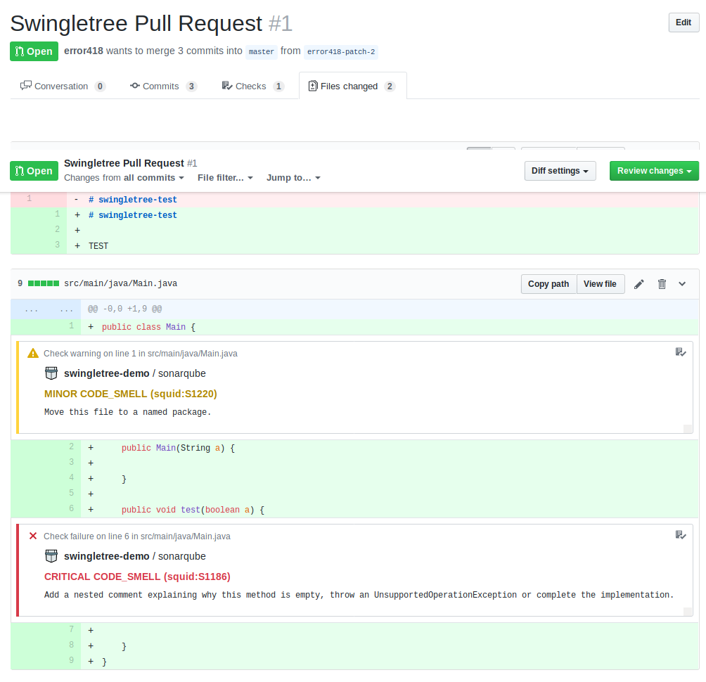
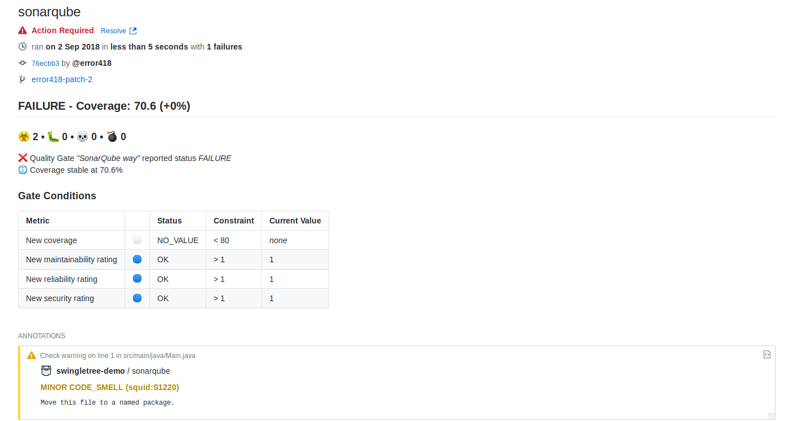

Need a peek of what Swingletree looks like? Find a collection of screenshots below.
Swingletree can persist build reports to ElasticSearch, making it possible to generate custom build reports using Kibana or Grafana.


SonarQube findings are annotated and updated inside your Pull Requests. If the built-in SonarQube Branch Analysis quality gates are not fulfilled, the Pull Request can be blocked from merging.

Swingletree annotates the code inside the Pull Request with the SonarQube findings. Developers do not have to leave GitHub.

Posting and deleting analysis results as comments into the Pull Request conversation clutters the discussion and may lead to misunderstandings due to automated deletions. Swingletree uses GitHub Checks to inform users about the status of their Pull Request, which is a more fitting way of pointing out issues.
